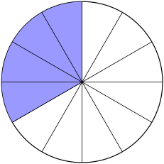
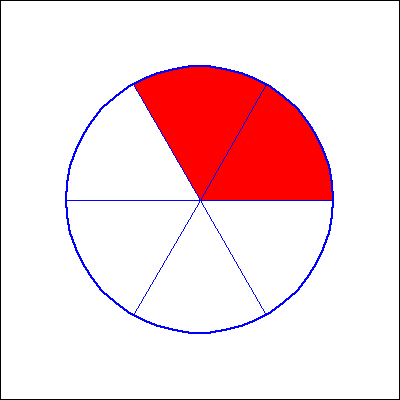
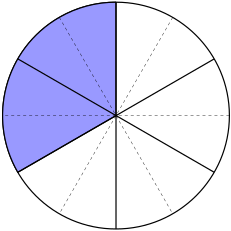
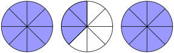
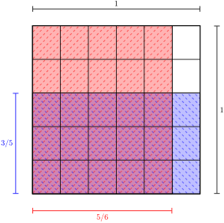

A fraction is a number written in the form of one whole number over another, \(\frac{a}{b}\text{,}\) where \(b\neq 0\text{.}\) The denominator, \(b\text{,}\) tells us how many equally sized parts make up a whole. The numerator, \(a\text{,}\) tells us how many of the parts are present.
Working with fractions can get tricky pretty quick. It is worth getting comfortable with a few “real world” examples that have “nice” fractions. This can be useful when you come across complicated and more abstract uses of fractions in the future, you can think back to something that’s clear in your brain and even test out ideas with those friendly fractions, their visuals, and the situations they represent.
Pizza is helpful in many situations. Suppose a large pizza is cut into 12 equally sized pieces and that your family finished 8 of them during dinner. Since the pieces are all the same size and 12 of them make up an whole pizza, the denominator we want is 12. The number of pieces of pizza left, 4, is the numerator.

Figure2.1.2.Your family ate 8 slices (unshaded) from a twelve-slice pizza, leaving 4 (shaded).
The fraction of the whole pizza left is written as \(\frac{4}{12}\) and read as “four twelveths”. Just in case you are not a fan of pizza, there are many ways to think about and diagram this fraction:
Figure2.1.3.A variety of diagrams of the fraction \(\frac{4}{12}\) (shaded) and \(\frac{8}{12}\) (unshaded).
We can think of the rectangle as representing desk in a classroom; the shaded desks have students sitting in them. Four twlefths of the desks have students. Perhaps the circles each represent a space in an egg carton. You’ve used eight twelfths of your dozen eggs. Suppose that the line segment represents a length of one foot. Since a foot is equal to 12 inches, the length of the shaded region is 4 inches or four twelfths of a foot. The stars could show the positions of players in a certain area of a field of play. Four twelfths of the players in this area are on the blue team and eight twelfths are on the white team.
Observation2.1.4.
Each “whole” is split into 12 equally sized parts and 4 of those parts are shaded.
Check for Understanding2.1.5.Visualizing Fractions.

Fill in blanks with fractions. Don’t forget to reduce fractions if you can.
of the figure is shaded.
of the figure is not shaded.
Answer1.
\({\frac{1}{3}}\)
Answer2.
\({\frac{2}{3}}\)
Solution.
The pie is cut into \(6\) pieces evenly, so the denominator of the fractions is \(6\text{.}\)
Since \(2\) pieces are shaded, we can say \(\frac{2}{6}={{\frac{1}{3}}}\) of the figure is shaded. Notice that we must reduce fraction if we can.
Since \(4\) pieces are not shaded, we can say \(\frac{4}{6}={{\frac{2}{3}}}\) of the figure is not shaded.
The fractions described above are considered proper fractions; the numerator is less than the denominator, \(a \lt b\text{.}\) Fractions where the numerator is greater than or equal to the denomintor are called improper fractions. Remember that fractions themselves, even though they have multiple pieces, represent a single value. A proper fraction has a value less than 1 while an improper fraction is greater than or equal to 1.
Good Brain Habit2.1.6.
It is worth noting that outside of your math class, most people will use the word fraction in English to mean a proper fraction, and typically a proper fraction with a small value. For example, “Only a fraction of the menu options are gluten free.”
Since an improper fraction represents a value larger than 1, it can also be written as what is called a mixed number, a whole number and a fraction. Mixed numbers represent wholes and parts, so \(1\frac{3}{4}\) is 1 whole and 3 of 4 equally sized parts that make a whole. We can represent any fraction, proper or improper, in multiple ways.
Definition2.1.7.Equivalent Fractions.
Fractions that appear different but have the same value are called equivalent fractions.
Before we get into the mechanics of equivalent fractions, let’s think more about the pizza example. Even though what we’ll actually be quite procedural in all our manipulations, it is important to remember what the fraction actually reprepsents.
Example2.1.8.Picturing Equivalent Fractions.
Use the idea of the pizza to show that the fractions \(\frac{4}{12}\) and \(\frac{2}{6}\) are equivalent.
Solution.
The pizza we considered earlier was cut into 12 equally sized pieces and 8 of those were eaten. If, rather than thinking about individual pieces as the equally sized parts that tell us what the denominator is, let’s say that a serving of pizza is two slices. That means this pizza has 6 equally sized servings, the denominator, and if your family ate eight pieces they consumed 4 servings in total, the numerator. So, \(\frac{4}{6}\) (“four sixths”) of the pizza has been eaten. We can see this visually in Figure 2.1.9

Figure2.1.9.We can view this as 4 out of 12 slices being shaded or as 2 out of 6 servings.
In both pizza diagrams, the same amount of pizza is shaded and the same amount remains unshaded. This is a visual to see that the fractions \(\frac{8}{12}\) and \(\frac{4}{6}\) are equivalent.
Good Brain Habit2.1.10.
Try this same argument with the other diagrams in Figure 2.1.3.
Most fraction computations are made simpler by using the equivalent improper fraction to a given mixed number. So, how we do convert a mixed number to an improper fraction? And, why are those equivalent? Of course, we’ll start by thinking about pizza!
Suppose instead of the single large pizza from before, you order three medium pizzas each with 8 equally sized slices. This time, while you’re gathering beverages, your dog takes 5 slices from one of the pizzas.

Figure2.1.11.Three 8-slice pizzas with 5 slices taken.
We determine the improper fraction represented by the diagram in Figure 2.1.11 in the same way. Because 8 equally sized pieces make one whole pizza, this is the denominator of the fraction. The total number of slices is 19; we can see this by counting up to 19 or adding the 8 slices from each whole pizza to the three remaining slices in the partially eaten pizza. So, after the dog sneaks 5 slices, we have \(\frac{19}{8}\text{,}\)nineteen eigths, of a pizza remaining. As a mixed number, this is 2 whole pizzas and 3 slices, \(2\frac{3}{8}\text{.}\)
Drawing diagrams to represent fractions is very useful, but not very practical for handling every fraction you come across. The procedures for converting between a mixed number, like the \(2\frac{3}{8}\) above, and an improper fraction are given below.
Procedure2.1.12.Convert a Mixed Number to an Improper Fraction.
To convert a mixed number to an improper fraction,
Multiply the whole number by the denominator,
Add this product to the numerator,
This sum is the new numerator of the improper fraction, and
The denominator of the improper fraction is the same as that of the fracitonal component of the mixed number.
Example2.1.13.Convert a Mixed Number to an Improper Fraction.
Rewrite the mixed number \(2\frac{3}{8}\) as an equivalent improper fraction.
Answer.
\(2\frac{3}{8} = \frac{19}{8}\)
Solution.
Multiply the whole number by the denominator, \(2 \cdot 8 = 16\text{,}\)
Add this product to the numerator, \(16 + 3 = 19\text{,}\)
This sum is the new numerator of the improper fraction, and he denominator of the improper fraction is the same as that of the fracitonal component of the mixed number, \(2\frac{3}{8} = \frac{19}{8}\text{.}\)
Check for Understanding2.1.14.Converting Mixed Numbers.
Convert each mixed fraction to an improper fraction.
\(1 \frac{2}{8}\) =
\(7 \frac{4}{10}\) =
\(11 \frac{2}{8}\) =
Hint.
Multiply the whole number term by the denominator of the proper fraction. Combine with the other numerator.
Answer1.
\(\frac{10}{8}\)
Answer2.
\(\frac{74}{10}\)
Answer3.
\(\frac{90}{8}\)
Procedure2.1.15.Convert an Improper Fraction to a Mixed Number.
To convert an improper fraction to a mixed number,
Divide the numerator by the denomintor, determine how many “whole times” the denominator “goes in to” the numerator,
Multiply this whole number quotient by the denominator,
Subtract this product from the numerator.
The quotient is the whole number, the difference is the numerator of the fractional piece, and the denominator remains the same.
Example2.1.16.Convert a Mixed Number to an Improper Fraction.
Rewrite the improper fraction \(\frac{19}{8}\) as an equivalent mixed number.
Answer.
\(\frac{19}{8} = 2\frac{3}{8}\)
Solution.
Divide the numerator by the denomintor, determine how many “whole times” the denominator “goes in to” the numerator, \(19 \div 8 = 2.375\text{,}\)
Multiply this whole number quotient by the denominator, \(2 \cdot 8 = 16\text{,}\)
Subtract this product from the numerator, \(19-16=3\text{.}\)
The quotient is the whole number, the difference is the numerator of the fractional piece, and the denominator remains the same, \(\frac{19}{8} = 2\frac{3}{8}\text{.}\)
Check for Understanding2.1.17.Converting Improper Fractions.
Change to mixed numbers.
Here is an example of how to put your answer in an answer box.
If your answer is \(2 \frac{3}{5}\) then put 2 3/5 into the answer
Make sure that you leave a space between the whole number and the fraction.
1) \(\frac{5}{4}\)=
2) \(\frac{14}{5}\)=
3) \(\frac{39}{9}\)=
Answer1.
\(1 {\textstyle\frac{1}{4}}\)
Answer2.
\(2 {\textstyle\frac{4}{5}}\)
Answer3.
\(4 {\textstyle\frac{1}{3}}\)
Solution.
Solution
1) When we divide 5 by 4 we get quotient 1 and remainder 1, so our answer is (1 1/4).
2) When we divide 14 by 5 we get quotient 2 and remainder 4, so our answer is (2 4/5).
3) When we divide 39 by 9 we get quotient 4 and remainder 3. But, since \(\frac{3}{9}\) is not reduced,
we have to reduce it to \(\frac{1}{3}\) and our answer is (4 1/3).
We can replace any fraction or mixed number with an equivalent fraction at any step of any computation. We know the definition of quivalent fractions and can identify them in diagrams, but how to we change them numerically?
Fact2.1.18.Equivalent Fractions.
Any fraction, proper or improper or as a fractional piece of a mixed number, can be adjusted to an equivlent fraction by multiplying or dividing both the numerator and the denominator by the samenon-zero number.
This tells us the allowable “moves” we can do to a fraction without changing its value.
We often hear the term reduced to refer to a particular form of a fraction. Usually, when someone says the fraction is reduced or in reduced form they mean that there is no other equivalent fraction with a smaller numerator or denominator. Often the reduced form a fraction is preferred, but that is not universally true.
Example2.1.19.Reduce a Fraction.
Reduce the fraction \(\frac{90}{105}\) as much as possible.
Hint.
Since we want to make both the numerator and denominator smaller number, and keep the fraction equivalent, we look for numbers that we can divide both the numerator and denominator by.
Answer.
\(\frac{90}{105} = \frac{6}{7}\)
Solution.
There are many different strategies for this process; they all differ slightly but rely on Fact 2.1.18. What we’re looking for when trying to reduce a fraction are common factors of both the numerator and denominator. A common factor of a set of numbers is one that goes into every number of the set evenly with no remainders.
In this example, the numerator and denominator have several common factors. The order you notice them in will vary across people. You might notice first that 5 is a common factor. So, we divide both the numerator and denominator by 5:
All of the equal signs above are used purposely; they tell us that the value of the fraction has not changed. This is true because we used one of the “moves” allowed by Fact 2.1.18.
There is nothing special about the order here. If we noticed that both 105 and 90 are divisible by 3 first, we could have used that first, followed by 5, and we’d end up in the same place. It is also possible that one would notice that 15 is a common factor of both 90 and 105; and so we could complete the process in a single step by dividing both the numerator and denominator by 15. It is typically easier to notice smaller common factors and easier to divide by those smaller numbers, but using smaller pieces requires more steps. With practice, you’ll find a sweet spot that is good for your brain.
This can be tedious to write out this way when there are a lot of common factors. As long as you’re careful with the use of equal signs and remember the allowable moves, some people prefer a sort of cancellation notation that might look like:
We know we cannot reduce this fraction further since 6 and 7 have no common factors; \(6 = 1 \cdot 6 = 2 \cdot 3\) and \(7 = 1 \cdot 7\text{.}\)
Check for Understanding2.1.20.Reducing Fractions.
Put in simplest form.
For example if \(\frac{3}{7}\) were the answer you would put 3/7 in the answer box.
1) \(\frac{14}{16}\)=
2) \(\frac{28}{36}\)=
2) \(\frac{35}{5}\)=
Answer1.
\({\frac{7}{8}}\)
Answer2.
\({\frac{7}{9}}\)
Answer3.
\(7\)
Solution.
Solution
1) To put \(\frac{14}{16}\) into simplest form we must divide both numerator and denominator by 2
(which is their greatest common factor) to get answer \(\frac{7}{8}\) which we put in the answer box as \(7/8\text{.}\)
2) To put \(\frac{28}{36}\) into simplest form we must divide both numerator and denominator
by 4 to get answer \(\frac{7}{9}\) which we put in the answer box as \(7/9\text{.}\)
For some computations, we need an equivalent fraction that is not reduced. We can use the other allowable move from Fact 2.1.18 for this. The most common place where we’d need this is for addition or subtraction of fractions.
When fractions have the same denominator, we simply add or subtract their numerators. Remember, the denominator tells us how many equally sized parts make up a whole, and we should think of these equally sized parts as the objects. So, in our first pizza example with 12 slices, the computation \(\frac{5}{12} + \frac{3}{12} = \frac{8}{12}\) could represent one person eatin 5 slices and another eating 3 slices meaning altogether they ate 8 slices. We can simply add the number of slices up for a total, because the objects we’re counting up are the same.
If the denominators are not the same, maybe slices from a large pizza and slices from a medium pizza, \(\frac{5}{12} + \frac{3}{8} = ?\text{,}\) then a total of 8 objects doesn’t tell us what we want to know. It would be equivalent to asking something like “If Jack has 5 bananas and Jill has 3 apples, what do they have alltogether?” They have 8 pieces of fruit altogether, but they have neither 8 apples nor 8 bananas nor 8 “banapples”!
In order to make sure we’re counting objects that are the same, we make sure the denominators of the fractions are equal before doing any addition or subtraction. We can use both moves in Fact 2.1.18 on any of the fractions to make this happen.
Example2.1.21.Add Fractions.
Complete the fraction addition coming from the example of pizzas with differing numbers of slices:
In order to be able to simply add the numerators, the denominators of the fractions must be the same. Try applying the moves from Fact 2.1.18 to one or both fractions. Can you do this so that you end up with equivalent fractions with the same denomintors?
Solution.
Since both fractions \(\frac{5}{12}\) and \(\frac{3}{8}\) cannot be further reduced, we need to make the denominators match by making each of those numbers larger.
There are a few typical options for a common denominator, but as long as you’ve only used Fact 2.1.18 and have denomintors that are equal, any option is fine.
A common common denomintor (“words are hard”) is simply the product of the denominotrs we start with. When we multiply the 12 in the denominator by 8, we must also do the same to the numerator to keep the fraction equivalent. Similarly, multiplying the 8 denominator by 12 will make the denominators match, but we need to again do the same to the numerator to keep the fractions equivalent. In written out steps, this would look like
You might also just want to do the division in a calculator to convert this to a decimal number anyway, and in that case, the size of the numerator and denominator matter less.
These fractions also might represent a situtation where 96 equally sized make one whole. In that case, the form of this answer tells us that we have exactly 76 of those objects.
If you do want to reduce this fraction, it works in the same way as Example 2.1.19:
Another choice for a common denominator is the least common multiple of the denominators. This approach has the benefit of keeping the denominator as small as possible, but the steps to find the least common multiple may be numerous.
For this example, the least common multiple of 12 and 8 is 24. With this common denominator, the steps look like:
This method will more often, but not always, end in an answer that is already reduced. We can see from the reduced forms, that both methods produce equvalent fractions as the final answer.
Both Example 2.1.19 and Example 2.1.21 present multiple methods and approaches for acheiving the same goal; the answers (while they might look different) are the same with all methods.
Good Brain Habit2.1.22.
Carefully read different approaches so that you can apply those methods if needed. But the best method is always the one that YOUR BRAIN is the most comfortable with and makes the most sense to YOU.
Conceptually, multiplication and division of fractions is trickier, but procedurally, it is easier (for most folks) than addition or subtraction. So, we’ll start with the process for each operation.
Procedure2.1.24.Multiplying Fractions.
If needed, convert all factors from mixed numbers to improper fractions, Procedure 2.1.12.
Multiply the numerators of all the factors to determine the numerator of the product.
Multiply the denominators of all the factors to determine the denominator of the product.
If desired, reduce the product, Example 2.1.19, or convert from an improper fraction to a mixed number, Procedure 2.1.15.
Remember, to enter a fraction of the form \(\frac{a}{b}\text{,}\) type a / b.
Hint.
Numerators / Denominators
Answer.
\(\frac{12\cdot 10}{5\cdot 6}\)
We will divert from our pizza example to help visualize and conceptualize multiplication. Pizza is still great, but things that make us think in rectangles will be better for this concept. Let’s first imagine a classroom with 5 rows of 6 desks. How many desks are there total? You might do the computation \(5 \cdot 6 = 30\) and correctly give the answer of 30 desks without much thought. Thinking about rectangles and area can help us see why this answer of 30 makes sense, but also why 5 times 6 is the same as 6 times 5, and the visualization with help with fractions in just a bit.
Figure2.1.27.30 desks arranged in 5 rows with 6 desks in each row.
This picture helps us visualize the “five groups of six objects” that the mathematical expression \(5 \times 6\) represents. We can also turn the picture or our heads sideways and see that the number of desks don’t change. So, “five groups of six objects” is the same as “six groups of five objects”; not an obvious truth when it is just the words.
The spaces between the squares are to help us see them as desks. We could draw a very similar picture without space to thing about the area of a rug that is 5 feet by 6 feet. Now, for a similar picture to that, but thinking in fractions this time.

Figure2.1.28.An area diagram to show that \(\frac{3}{5}\cdot \frac{5}{6} = \frac{15}{30}\text{.}\)
Remember that the product of two numbers (what we get after multiplying) is the area of a rectangle with those two numbers as its length and width. The area of the entire largest square in Figure 2.1.28 is \(1 \cdot 1 = 1\text{.}\) (We should note that the units of the product here would be square units, like square feet if the sides were measured in feet. In the real world, this is an important distinction, but we’re safe to ignore the units for this discussion of the numbers.) The area of the purple/crosshatched rectangle we can compute via multiplication, length times width. The length measured vertically in blue is \(\frac{3}{5}\text{.}\) We can tell this because that side of the square is split into 5 equally sized pieces (the denominator) and the length is 3 of those pieces (the numerator). Similary, the width measured horizontally in red is \(\frac{5}{6}\text{.}\) To compute the area, we multiply these two values:
This product can be reduced, but this is a good example of when doing that reduction is not helpful. This is what the procedure for multiplication, Procedure 2.1.24, tells us to do, but why does this answer and process make sense?
First, the answer. We see the fraction \(\frac{15}{30}\) and know this means there are 30 equally sized pices to make a whole and we are considering 15 of those pieces. We consider the largest square to be the whole, and we can count the 30 smaller rectangles that make up the whole and the 15 that are shaded purple/crosshatched. Hooray! That answer aligns with our picture, but doesn’t explain why this is always the procedure.
In order to determine how many equally sized smaller rectangles make the whole large square, we can think about it in the same way as the desks: 5 rows of 6 desks each. Notice that 5 is the denominator of the first fraction, since that side of the square is split into 5 equal segments, and 6 is the denominator of the second fraction. To determine the numerator, we need to think about the area of the purple/crosshatched region. This is 15 rectangles as we said before, in 3 rows (the numerator fo the first fraction) of 5 rectangles (the numerator of the second fraction).
Lastly, we need to know how to divide fractions. The most important thing to remember here, is that multiplication and division are inverse processes. Also, a fraction’s reciprocal, exchanging the positions of the numerator and denominator, is what is called its multiplicative inverse.
So that we can all use the same language, in a division problem, like \(\star \div \square = \triangle\text{,}\) the first number (fraction or not), \(\star\text{,}\) is the dividend, the second number, \(\square\text{,}\) is the divisor, and the answer, \(\triangle\) is the quotient. Is is also worth remembering that a fraction itself represents division, \(\star \div \square = \frac{\star}{\square} = \triangle\text{.}\) The horizontal line in a fraction, called a vinculum tells us to to complete any operations on the top and bottom separately first, and then divide the numerator by tthe denomintor.
Procedure2.1.30.Dividing Fractions.
If needed, convert the dividend and divisor from mixed numbers to improper fractions, Procedure 2.1.12.
Replace the divisor with its reciprocal and the division sign with multiplication.
Multiply the fractions.
If desired, reduce the product, Example 2.1.19, or convert from an improper fraction to a mixed number, Procedure 2.1.15
Example2.1.31.Divide Fractions.
Divide \(\frac{3}{10} \div 3\frac{5}{6}\text{.}\)
Solution.
We first convert the mixed number divisor, \(3\frac{5}{6}\text{,}\) into an improper fraction:
Then we do fraction multiplication as usual. The full process is:
\(\displaystyle{\begin{aligned}[t]
\frac{1}{20} \div \left(-\frac{9}{16}\right)
\amp = \frac{1}{20} \cdot \left(-\frac{16}{9}\right) \amp \hbox{We can divide the first denominator and the second numerator by 4.}\\
\amp = \frac{1}{5 }\cdot\left(-\frac{4}{9}\right) \\
\amp = -\frac{4}{45}
\end{aligned}
}\)
Rather than using diagram to make sense of why fraction division works this way, we are going to try another good mathly brain habit:
Good Brain Habit2.1.33.
Check the correctness of a procedure using nice, easy, known examples.
In this case, that means we want to use facts that we know about know about division and check if a precedure gives us the correct result. First, we should know that any non-zero number divided by itself is equal to 1. As long as I don’t choose 0, I can be as whacky as I want to be with these numbers:
This should give you the feeling that “flipping and multiplying” is at least on the right track… But, how do we know which fraction to flip? You can try whole numbers that you’re comfortable with:
Remember that a fraction is also division, so we can write whole numbers as fractions by giving them a denominator of 1. If we had erroneously “flipped” the first fraction above, we would end up with an incorrect answer of \(\frac{1}{2}\text{.}\)
Another option is to relate this back to words. Words can be both tricky, helpful, or both, so this approach is not going to work well for every brain. Again, sticking with nice easy number is a good plan. One can read \(\frac{1}{2} \div 2\) as the question, “If I split\(\frac{1}{2}\) into 2 equally sized pieces, how large are those pieces?” Hopefully, we’re comfortable enough thinking about what fractions are that we can see that this answer is \(\frac{1}{4}\text{,}\) and that agrees with the answer we’d get following the procedure. Possibly less familiar is using the word “\of” when we use multiplication. This makes sense with whole numbers; “Five groups of six apples is \(5 \cdot 6 = 30\) apples.” And, it makes sense with fractions too. "One half of 30 apples is 15." Figuring out one half of something is the same as dividing that something by two. So, \(\star \div 2 = \star \div \frac{2}{1} = \star \cdot \frac{1}{2}\text{.}\)
When we divide fractions with the same denominator, we’re comparing “the same objects,” so it works similarly to addition or subtraction once we’ve found a common denominator. Consider \(\frac{9}{14} \div {3}{14}\text{.}\) We can think of “fourteenths” as the objects. Since they are the same, they could be anything! “Nine widgets divided by three widgets” is the same as the fraction question, and we can think about dividing 9 widgets up into groups of 3 widgets each… We get 3 groups! This can help us check if we should “flip” the first or second fraction.
For anything involving fractions, it is worth figuring out a scenario that you’re comfortable with to test out ideas in. Some people who cook or bake frequently, work really well with halves and thirds and quarters, and are comfortable halving or tripling a recipe; that’s division and multiplication of fractions. If you have experience in construction or carpentry, you’re likely to be comfortable with halves, quarters, eigths, sixteenths, and even thirtyseconds. You are probably very comfortable knowing which drill bit is larger. Fabric for sewing is sold by the yard, and you often need to add up the different pieces to know how much total yardage you need. You can always round up to be safe, but you can also buy in quarters of a yard and not spend as much.
Fractions don’t have to be scary, and the above examples are all instances where time and practice has led to being more comfortable and confident.